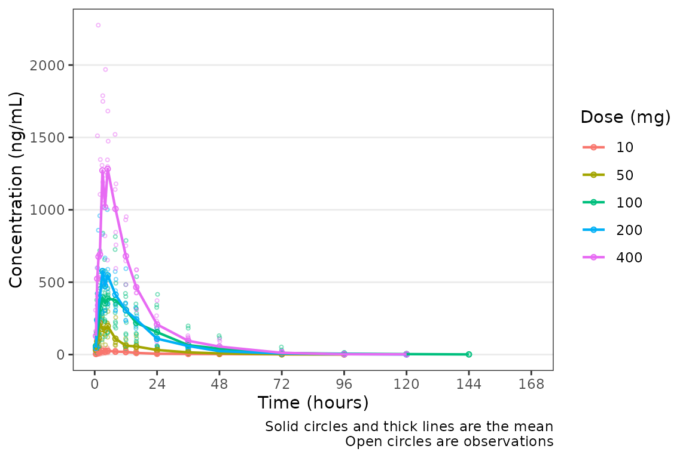
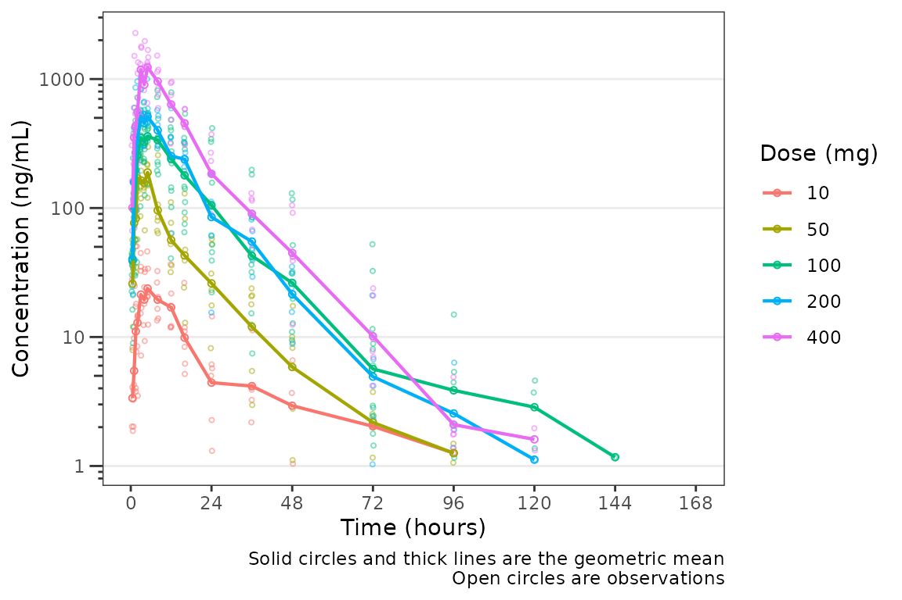
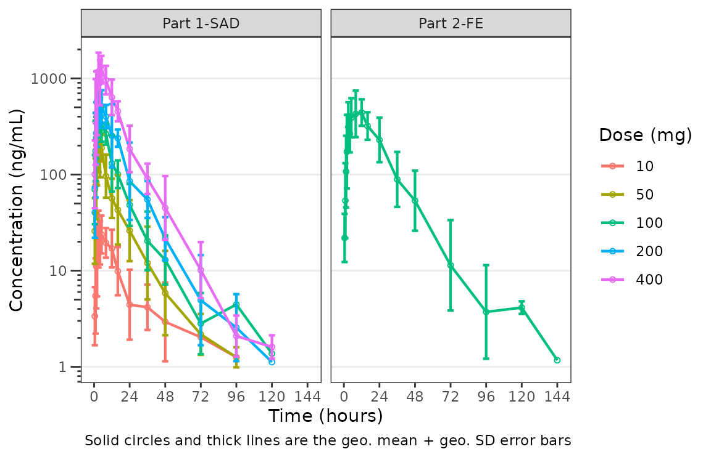
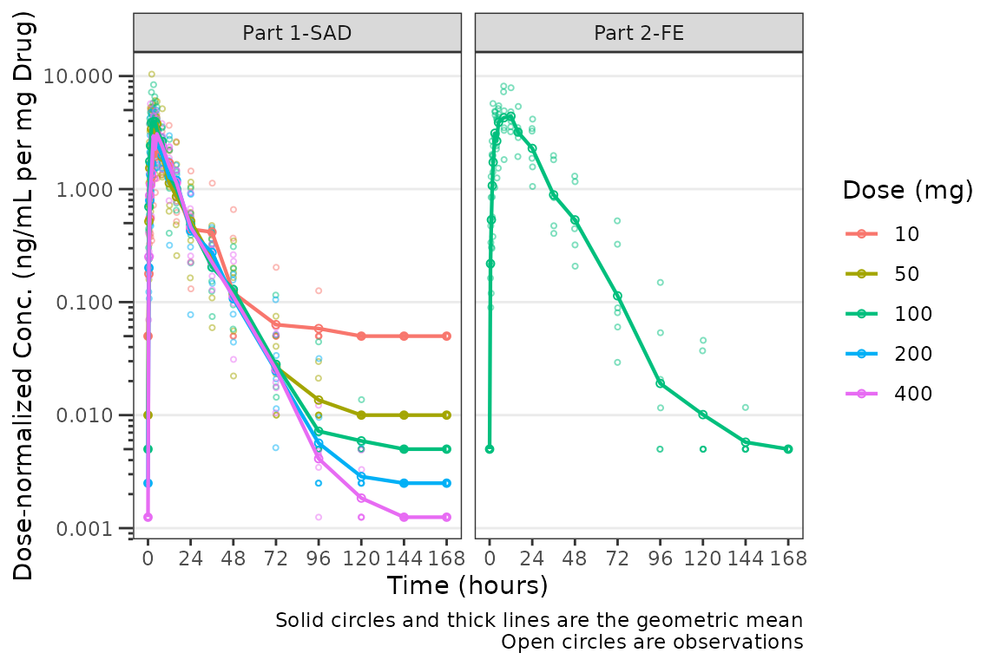

This vignette will demonstrate pmxhelpr functions for
exploratory data analysis.
First, we will load the required packages.
options(scipen = 999, rmarkdown.html_vignette.check_title = FALSE)
library(pmxhelpr)
library(dplyr, warn.conflicts = FALSE)
library(ggplot2, warn.conflicts = FALSE)
library(patchwork, warn.conflicts = FALSE)For this vignette, we will peform exploratory data analysis on the
data_sad dataset internal to pmxhelpr. We can
take a quick look at the dataset using glimpse() from the
dplyr package.
glimpse(data_sad)
#> Rows: 720
#> Columns: 23
#> $ LINE <dbl> 1, 2, 3, 4, 5, 6, 7, 8, 9, 10, 11, 12, 13, 14, 15, 16, 17, 18,…
#> $ ID <dbl> 1, 1, 1, 1, 1, 1, 1, 1, 1, 1, 1, 1, 1, 1, 1, 1, 1, 1, 1, 1, 2,…
#> $ TIME <dbl> 0.00, 0.00, 0.48, 0.81, 1.49, 2.11, 3.05, 4.14, 5.14, 7.81, 12…
#> $ NTIME <dbl> 0.0, 0.0, 0.5, 1.0, 1.5, 2.0, 3.0, 4.0, 5.0, 8.0, 12.0, 16.0, …
#> $ NDAY <dbl> 1, 1, 1, 1, 1, 1, 1, 1, 1, 1, 1, 1, 2, 2, 3, 4, 5, 6, 7, 8, 1,…
#> $ DOSE <dbl> 10, 10, 10, 10, 10, 10, 10, 10, 10, 10, 10, 10, 10, 10, 10, 10…
#> $ AMT <dbl> NA, 10, NA, NA, NA, NA, NA, NA, NA, NA, NA, NA, NA, NA, NA, NA…
#> $ EVID <dbl> 0, 1, 0, 0, 0, 0, 0, 0, 0, 0, 0, 0, 0, 0, 0, 0, 0, 0, 0, 0, 0,…
#> $ ODV <dbl> NA, NA, NA, 2.02, 4.02, 3.50, 7.18, 9.31, 12.46, 13.43, 12.11,…
#> $ LDV <dbl> NA, NA, NA, 0.7031, 1.3913, 1.2528, 1.9713, 2.2311, 2.5225, 2.…
#> $ CMT <dbl> 2, 1, 2, 2, 2, 2, 2, 2, 2, 2, 2, 2, 2, 2, 2, 2, 2, 2, 2, 2, 2,…
#> $ MDV <dbl> 1, NA, 1, 0, 0, 0, 0, 0, 0, 0, 0, 0, 0, 0, 1, 1, 1, 1, 1, 1, 1…
#> $ BLQ <dbl> -1, NA, 1, 0, 0, 0, 0, 0, 0, 0, 0, 0, 0, 0, 1, 1, 1, 1, 1, 1, …
#> $ LLOQ <dbl> 1, NA, 1, 1, 1, 1, 1, 1, 1, 1, 1, 1, 1, 1, 1, 1, 1, 1, 1, 1, 1…
#> $ FOOD <dbl> 0, 0, 0, 0, 0, 0, 0, 0, 0, 0, 0, 0, 0, 0, 0, 0, 0, 0, 0, 0, 0,…
#> $ SEXF <dbl> 1, 1, 1, 1, 1, 1, 1, 1, 1, 1, 1, 1, 1, 1, 1, 1, 1, 1, 1, 1, 1,…
#> $ RACE <dbl> 2, 2, 2, 2, 2, 2, 2, 2, 2, 2, 2, 2, 2, 2, 2, 2, 2, 2, 2, 2, 1,…
#> $ AGEBL <int> 25, 25, 25, 25, 25, 25, 25, 25, 25, 25, 25, 25, 25, 25, 25, 25…
#> $ WTBL <dbl> 82.1, 82.1, 82.1, 82.1, 82.1, 82.1, 82.1, 82.1, 82.1, 82.1, 82…
#> $ SCRBL <dbl> 0.87, 0.87, 0.87, 0.87, 0.87, 0.87, 0.87, 0.87, 0.87, 0.87, 0.…
#> $ CRCLBL <dbl> 128, 128, 128, 128, 128, 128, 128, 128, 128, 128, 128, 128, 12…
#> $ USUBJID <chr> "STUDYNUM-SITENUM-1", "STUDYNUM-SITENUM-1", "STUDYNUM-SITENUM-…
#> $ PART <chr> "Part 1-SAD", "Part 1-SAD", "Part 1-SAD", "Part 1-SAD", "Part …We can see that this dataset is already formatted for modeling. It contains NONMEM reserved variables (e.g., ID, TIME, AMT, EVID, MDV), as well as, dependent variables of drug concentration in original units (ODV) and natural logarithm transformed units (LDV). In addition to the numeric variables, there are two character variables: USUBJID and PART.
PART specifies the two study cohorts:
- Single Ascending Dose (SAD)
- Food Effect (FE).
unique(data_sad$PART)
#> [1] "Part 1-SAD" "Part 2-FE"This dataset also contains an exact binning variable:
- Nominal Time (NTIME).
This variable represents the nominal time of sample collection relative to first dose per study protocol whereas Actual Time (TIME) represents the actual time the sample was collected.
##Unique values of NTIME
unique(data_sad$NTIME)
#> [1] 0.0 0.5 1.0 1.5 2.0 3.0 4.0 5.0 8.0 12.0 16.0 24.0
#> [13] 36.0 48.0 72.0 96.0 120.0 144.0 168.0
##Comparison of number of unique values of NTIME and TIME
length(unique(data_sad$NTIME))
#> [1] 19
length(unique(data_sad$TIME))
#> [1] 449Population Concentration-time plots
Overview of plot_dvtime
Let’s visualize the data. Let’s visualize the data. For this
visualization, we will leverage the functionality of
plot_dvtime to visualize our data. First, we will filter to
observation records only and derive a factor variable from DOSE to pass
to the color aesthetic.
Now let’s visualize the concentration-time data.
pmxhelpr includes a function for common visualizations of
observed concentration-time data in exploratory data analysis:
plot_dvtime
In our visualizations, we will leverage the following dataset
variables: + ODV: the original dependent variable (drug
concentration) in untransformed units (ng/mL) + TIME :
actual time since first dose (hours) + NTIME: nominal time
since first dose (hours) + LLOQ : lower limit of
quantification for drug concentration
plot_dvtime requires a dependent variable (specified as
named vector using dv_var argument) and time variable
(specifed as named vector using the time_vars). The
dependent variable in data_sad is named "ODV",
so we must specify the name using dv_var. The default names
for the time_vars are "TIME" and
"NTIME". The color aesthetic is specified using the
col_var argument. The cent argument specifies
which central tendency measure is plotted.
plot_dvtime(data = plot_data, dv_var = c(DV = "ODV"), col_var = "Dose (mg)", cent = "mean",
ylab = "Concentration (ng/mL)", xlab = "Time (hours)") 
Not a bad plot with minimal arguments! We can see the mean for each
dose as a colored thick line and observed data points as colored open
circles with some alpha added. A caption also prints by default
indicating what the plot elements depict. The caption can be removed by
specifying show_caption = FALSE.
plot_dvtime(data = plot_data, dv_var = c(DV = "ODV"), col_var = "Dose (mg)", cent = "mean",
ylab = "Concentration (ng/mL)", xlab = "Time (hours)", show_caption = FALSE) 
However, this plot could be misleading! The food effect and fasted portions of the study are being pooled together within the 100 mg dose! Also, these data are likely better visualized using a log-scale y-axis, and the x-axis breaks are not optimized for the study design.
Adjusting plot aesthetics
Luckily, plot_dvtime returns a ggplot
object which we can modify like any other ggplot!
Therefore, we will add a manual x-axis scale, facet by PART, and apply a
more minimal plot theme.
plot_dvtime(data = plot_data, dv_var = c(DV = "ODV"), col_var = "Dose (mg)", cent = "mean",
ylab = "Concentration (ng/mL)", xlab = "Time (hours)") +
scale_x_continuous(breaks = seq(0,168,24))+
facet_wrap(~PART)+
theme_bw()
Much better aesthetics! We still need to log-transform the y-axis to
better visualize the terminal phase profile. We could specify a log10
y-axis transformation by adding in scale_y_log10();
however, plot_dvtime includes an argument
log_y which performs this operation with one added benefit
when using automatically generated plot captions with
show_captions = TRUE.
plot_dvtime uses the stat_summary function
from ggplot2 to calculate and plot the central tendency
measures and error bars. An often overlooked feature of
stat_summary, is that it calculates the summary statistics
after any transformations to the data performed by changing the
scales. This means that when scale_y_log10() is applied to
the plot, the data are log-transformed for plotting and the central
tendency measure returned when requesting "mean" from
stat_summary is the geometric mean. If the
log_y argument is used to generate semi-log plots along
with show_captions = TRUE, then the caption will clearly
delineate where arithmetic and gemoetric means are being returned.
plot_dvtime(data = plot_data, dv_var = c(DV = "ODV"), col_var = "Dose (mg)", cent = "mean",
ylab = "Concentration (ng/mL)", xlab = "Time (hours)", log_y = TRUE) +
scale_x_continuous(breaks = seq(0,168,24))+
facet_wrap(~PART)+
theme_bw()
The clinical team would like a simpler plot that clearly displays the
central tendency. We can use the argument cent = "mean_sdl"
to plot the mean with error bars and remove the observed points by
specifying obs_dv = FALSE.
plot_dvtime(data = plot_data, dv_var = c(DV = "ODV"), col_var = "Dose (mg)", cent = "mean_sdl",
ylab = "Concentration (ng/mL)", xlab = "Time (hours)", log_y = TRUE,
obs_dv = FALSE) +
scale_x_continuous(breaks = seq(0,168,24))+
facet_wrap(~PART)+
theme_bw()
Hmm…there is some noise at the late terminal phase. This is likely artifact introduced by censoring of data at the assay LLOQ; however, let’s confirm there are no weird individual subject profiles by connecting observed data points longitudinally within a subject - in other words, make a spaghetti plot.
We will change the central tendency measure to the median and add the
spaghetti lines. Data points within an individual will be connected by a
narrow line when ind_dv = TRUE
plot_dvtime(data = plot_data, dv_var = c(DV = "ODV"), col_var = "Dose (mg)", cent = "median",
ylab = "Concentration (ng/mL)", xlab = "Time (hours)", log_y = TRUE,
ind_dv = TRUE) +
scale_x_continuous(breaks = seq(0,168,24))+
facet_wrap(~PART)+
theme_bw()
It does not seem like there are outlier individuals driving the noise in the late terminal phase; therefore, this is almost certainly artifact introduced by data missing due to assay sensitivity and censoring at the lower limit of quantification (LLOQ).
Defining imputations for BLQ data
Let’s use imputation to assess the potential impact of the data
missing due to assay sensitivity. plot_dvtime includes some
functionality to do this imputation for us using the loq
and loq_method arguments.
The loq_method argument species how BLQ imputation
should be performed. Options are: + 0 : No handling. Plot
input dataset DV vs TIME as is. (default) +
1 : Impute all BLQ data at TIME <= 0 to 0
and all BLQ data at TIME > 0 to 1/2 x loq.
Useful for plotting concentration-time data with some data BLQ on the
linear scale + 2 : Impute all BLQ data at TIME
<= 0 to 1/2 x loq and all BLQ data at TIME
> 0 to 1/2 x loq.
The loq argument species the value of the LLOQ. The
loq argument must be specified when loq_method
is 1 or 2, but can be NULL
if the variable LLOQ is present in the dataset. In
our case, LLOQ is a variable in plot_data, so
we do not need to specify the loq argument (default is
loq = NULL).
plot_dvtime(plot_data, dv_var = c(DV = "ODV"), col_var = "Dose (mg)", cent = "mean",
ylab = "Concentration (ng/mL)", xlab = "Time (hours)", log_y = TRUE,
loq_method = 2) +
scale_x_continuous(breaks = seq(0,168,24))+
facet_wrap(~PART)+
theme_bw()
The same plot is obtained by specifying loq = 1
plot_dvtime(plot_data, dv_var = c(DV = "ODV"), col_var = "Dose (mg)", cent = "mean",
ylab = "Concentration (ng/mL)", xlab = "Time (hours)", log_y = TRUE,
loq_method = 2, loq = 1) +
scale_x_continuous(breaks = seq(0,168,24))+
facet_wrap(~PART)+
theme_bw()
A reference line is drawn to denote the LLOQ and all observations
with EVID=0 and MDV=1 are imputated as LLOQ/2.
Imputing post-dose concentrations below the lower limit of
quantification as 1/2 x LLOQ normalizes the late terminal phase of the
concentration-time profile. This is confirmatory evidence for our
hypothesis that the noise in the late terminal phase is due to censoring
of observations below the LLOQ.
Dose-normalization
We can also generate dose-normalized concentration-time plots by
specifying dosenorm = TRUE.
plot_dvtime(plot_data, dv_var = c(DV = "ODV"), col_var = "Dose (mg)", cent = "mean",
ylab = "Dose-normalized Concentration (ng/mL/mg Drug)", xlab = "Time (hours)", log_y = TRUE,
dosenorm = TRUE) +
scale_x_continuous(breaks = seq(0,168,24))+
facet_wrap(~PART)+
theme_bw()
When dosenorm = TRUE, the variable DOSE
needs to be present in the input dataset data. If
DOSE is not present in data, the function will
return an Error with an informative error message.
plot_dvtime(select(plot_data, -DOSE),
dv_var = c(DV = "ODV"), col_var = "Dose (mg)", cent = "mean",
ylab = "Dose-normalized Concentration (ng/mL/mg Drug)", xlab = "Time (hours)", log_y = TRUE,
dosenorm = TRUE) +
scale_x_continuous(breaks = seq(0,168,24))+
facet_wrap(~PART)+
theme_bw()
#> Error in `check_varsindf()`:
#> ! argument `"DOSE"` must be variables in `data`Dose-normalization is performed AFTER BLQ imputation in the case in which both options are requested. The reference line for the LLOQ will not be plotted when dose-normalized concentration is the dependent variable.
plot_dvtime(plot_data, dv_var = c(DV = "ODV"), col_var = "Dose (mg)", cent = "mean",
ylab = "Dose-normalized Concentration (ng/mL/mg Drug)", xlab = "Time (hours)", log_y = TRUE,
loq_method = 2, dosenorm = TRUE) +
scale_x_continuous(breaks = seq(0,168,24))+
facet_wrap(~PART)+
theme_bw()
Individual Concentration-time plots
The previous section provides an overview of how to generate
population concentration-time profiles by dose using
plot_dvtime; however, we can also use
plot_dvtime to generate subject-level visualizations with a
little pre-processing of the input dataset.
We can specify cent = "none" to remove the central
tendency layer when plotting individual subject data.
plot_dvtime(plot_data, dv_var = c(DV = "ODV"), col_var = "Dose (mg)", cent = "none",
ylab = "Concentration (ng/mL)", xlab = "Time (hours)", log_y = TRUE,
ind_dv = TRUE,
loq_method = 2, loq = 1) +
scale_x_continuous(breaks = seq(0,168,24))+
facet_wrap(~PART)+
theme_bw()
We can plot an individual subject by filtering the input dataset.
This could be extended generate plots for all individuals using
for loops, purrr::map() functions, or other
vectorized methods.
ids <- sort(unique(plot_data$ID))
plotlist<- list()
for(i in 1:length(ids)){
plotlist[[i]] <- plot_dvtime(filter(plot_data, ID == ids[i]),
dv_var = c(DV = "ODV"), col_var = "Dose (mg)", cent = "none",
ylab = "Concentration (ng/mL)", xlab = "Time (hours)", log_y = TRUE,
ind_dv = TRUE,
loq_method = 2, loq = 1, show_caption = FALSE) +
scale_x_continuous(breaks = seq(0,168,24))+
facet_wrap(~PART)+
labs(title = paste0("ID = ", ids[i], " | Dose = ", unique(plot_data$DOSE[plot_data$ID==ids[i]]), " mg"))+
theme_bw()+
theme(legend.position="none")
}
groups <- length(plotlist)/4
for(grp in 1:groups){
i <- (grp-1)*4+1
j <- grp*4
plist <- plotlist[i:j]
patchwork::wrap_plots(plist)
}